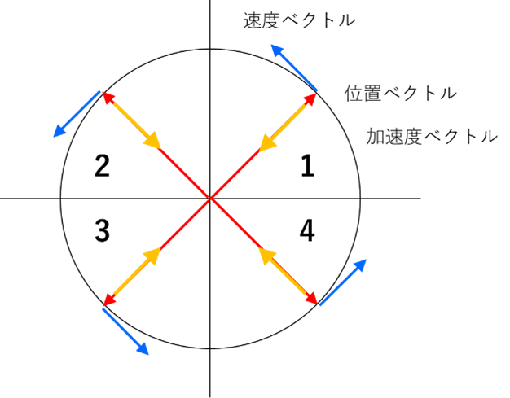

・位置ベクトル
原点 O を中心とした半径 r の円周上を角速度 ω で等速円運動する質点の位置 r=(x,y) の各成分は
\( \Large \displaystyle x(t) = r \cdot cos ( \omega \cdot t + \theta_0) \)
\( \Large \displaystyle y(t) = r \cdot sin ( \omega \cdot t + \theta_0) \)
となります．
・速度ベクトル
速度は，
\( \Large \displaystyle v_x (t) = \frac{dx}{dt} = - \omega \cdot r \cdot sin ( \omega \cdot t + \theta_0) \)
\( \Large \displaystyle v_y (t) = \frac{dy}{dt} = \omega \cdot r \cdot cos ( \omega \cdot t + \theta_0) \)
です．位置ベクトルｒと速度ベクトルｖの内積は，
\( \Large \displaystyle \vec{ r} \cdot \vec{v} = r \cdot cos ( \omega \cdot t + \theta_0) \{ - \omega \cdot r \cdot sin ( \omega \cdot t + \theta_0) \}
+ r \cdot sin ( \omega \cdot t + \theta_0) \{ \omega \cdot r \cdot cos ( \omega \cdot t + \theta_0 ) \} \)
\( \Large \displaystyle = - r^2 \cdot \omega \cdot sin ( \omega \cdot t + \theta_0) \cdot cos ( \omega \cdot t + \theta_0) + r^2 \cdot \omega \cdot sin ( \omega \cdot t + \theta_0) \cdot cos ( \omega \cdot t + \theta_0) \)
\( \Large \displaystyle = 0 \)
より，速度 v は位置 r （動径方向）と直交し，接線方向を向いていることになります．
・加速度ベクトル
加速度は，
\( \Large \displaystyle \alpha_x (t) = \frac{d v_x}{dt} = - \omega^2 \cdot r \cdot cos ( \omega \cdot t + \theta_0) = - \omega^2 \cdot x\)
\( \Large \displaystyle \alpha_y (t) = \frac{d v_y}{dt} = - \omega^2 \cdot r \cdot sin ( \omega \cdot t + \theta_0) = - \omega^2 \cdot y\)
となり，位置ベクトルとは逆の向きとなります．
速度ベクトルvと加速度ベクトルαの内積は，
\( \Large \displaystyle \vec{ v} \cdot \vec{ \alpha} = - \omega \cdot r \cdot sin ( \omega \cdot t + \theta_0) \{ - \omega^2 \cdot r \cdot cos ( \omega \cdot t + \theta_0) \}
+ \omega \cdot r \cdot cos ( \omega \cdot t + \theta_0) \{ - \omega^2 \cdot r \cdot sin ( \omega \cdot t + \theta_0 \} \)
\( \Large \displaystyle = r^2 \cdot \omega^3 \cdot sin ( \omega \cdot t + \theta_0) \cdot cos ( \omega \cdot t + \theta_0) - r^2 \cdot \omega^3 \cdot sin ( \omega \cdot t + \theta_0) \cdot cos ( \omega \cdot t + \theta_0) \)
\( \Large \displaystyle = 0 \)
となり，速度ベクトルｖと加速度ベクトルαは直交していることになります．
また，加速度の大きさは，
\( \Large \displaystyle \vec{\alpha} = \sqrt{ \alpha_x^2 + \alpha_y^2 } = \sqrt{ ( - \omega^2 \cdot x)^2 + ( - \omega^2 \cdot y)^2} = \omega^2 \cdot \vec{r} \)
と遠心力を導き出すことができます．
・位置ベクトル，速度ベクトル，加速度ベクトルと象限

上で計算したように，
\( \Large \displaystyle x(t) = r \cdot cos ( \omega \cdot t + \theta_0) \)
\( \Large \displaystyle y(t) = r \cdot sin ( \omega \cdot t + \theta_0) \)
\( \Large \displaystyle v_x (t) = - \omega \cdot r \cdot sin ( \omega \cdot t + \theta_0) \)
\( \Large \displaystyle v_y (t) = \omega \cdot r \cdot cos ( \omega \cdot t + \theta_0) \)
\( \Large \displaystyle \alpha_x (t) = - \omega^2 \cdot r \cdot cos ( \omega \cdot t + \theta_0) \)
\( \Large \displaystyle \alpha_y (t) = - \omega^2 \cdot r \cdot sin ( \omega \cdot t + \theta_0) \)
となりますので，各象限についての極性を考えると，
| 象限 | x | y | cos | sin | vx | vy | αx | αy |
| 1 | + | + | + | + | - | + | - | - |
| 2 | - | + | - | + | - | - | + | - |
| 3 | - | - | - | - | + | - | + | + |
| 4 | + | - | + | - | + | + | - | + |
となり，加速度のｘ，ｙの方向は，
第一象限 ： マイナス，マイナス
第二象限 ： プラス，マイナス
第三象限 ： プラス，プラス
第四象限 ： マイナス，プラス
となり，加速度ベクトルは常に円軌道の中心にむかうことになります．
次は，トルク，です．